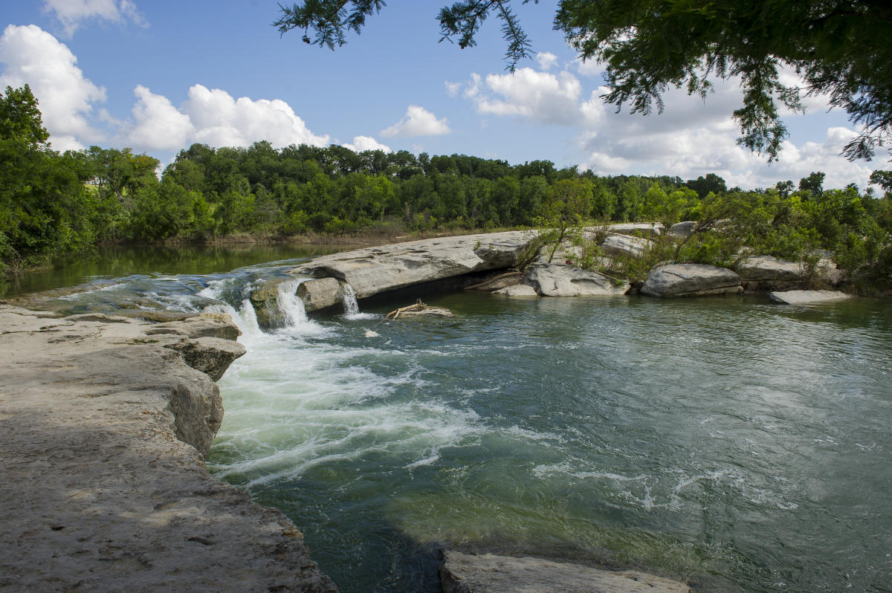

Welcome to non-official Page of Austin
Austin's History
Originally known as Waterloo, the site was later renamed in trubute to Stephen F. Austin,leading to the establishment of Austin as the capital of the Republic of Texas in 1839. Austin was the first capital of the United States to be established as a city-state.
| City | Population | City Founded | City Classification | Average Income | Region |
|---|---|---|---|---|---|
| Austin | 974,478 | 1838 | Urban | 42,242 | Central |
| Dallas | 1.28M | 1841 | Metropolitan | 31,975 | North |
| Houston | 2.28M | 1837 | Urban | 30,438 | Gulf Coast |
Things to do in Austin:
- Bullock Texas History Musuem
- Austin City Limits(Yearly)
- Museum of the Weird
- SXSW (Yearly)
- Wonderspaces Austin
Outdoor Activities
- Zilker Botanical Park
- Mount Bonnell
- McKinney Falls State Park 
- Lady Bird Johnson Wildflower Center
- Lake Travis